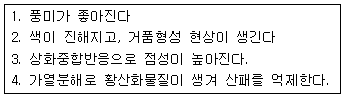

한식조리기능사 (2014-01-26 기출문제)
1과목: 식품위생 및 법규
1. 식품과 독성분의 연결이 틀린 것은?
- 복어 - 테트로도톡신
- 미나리 - 시큐톡신
- 섭조개 - 베네루핀
- 청매 - 아미그달린
(정답률: 76%)

2. 식품의 부패과정에서 생성되는 불쾌한 냄새물질과 거리가 먼 것은?
- 암모니아
- 포르말린
- 황화수소
- 인돌
(정답률: 58%)
3. 과일이나 과채류를 채취 후 선도유지를 위해 표면에 막을 만들어 호흡조절 및 수분증발 방지의 목적에 사용되는 것은?
- 품질개량제
- 이형제
- 피막제
- 강화제
(정답률: 85%)
4. 바이러스에 의해 발병되지 않는 것은?
- 돈단독증
- 유행성 간염
- 급성회백수염
- 감염성 설사증
(정답률: 64%)
5. 다음 중 국내에서 허가된 인공감미료는?
- 둘신
- 사카린나트륨
- 사이클라민산나트륨
- 에틸렌글리콜
(정답률: 81%)
6. 미생물의 생육에 필요한 조건과 거리가 먼 것은?
- 수분
- 산소
- 온도
- 자외선
(정답률: 91%)
7. 식품 첨가물과 사용목적을 표시한 것 중 잘못된 것은?
- 초산비닐수지 - 껌기초제
- 글리세린 - 용제
- 탄산암모늄 - 팽창제
- 규소수지 - 이형제
(정답률: 57%)
8. 생육이 가능한 최저수분활성도가 가장 높은 것은?
- 내건성 포자
- 세균
- 곰팡이
- 효모
(정답률: 65%)
9. 호염성의 성질을 가지고 있는 식중독 세균은?
- 황색포도상구균
- 병원성 대장균
- 장염 비브리오
- 리스테리아 모노사이토제네스
(정답률: 53%)
10. 발아한 감자와 청색 감자에 많이 함유된 독성분은?
- 리신
- 엔테로톡신
- 무스카린
- 솔라닌
(정답률: 90%)
11. 영업을 하려는 자가 받아야 하는 식품위생에 관한 교육시간으로 옳은 것은?
- 식품제조 ‧ 가공업 : 36시간
- 식품운반업 : 12시간
- 단란주점영업 : 6시간
- 옹기류제조업 : 8시간
(정답률: 82%)
12. 식품등의 표시기준상 영양성분에 대한 설명으로 틀린 것은?
- 한번에 먹을 수 있도록 포장 ‧ 판매되는 제품은 총 내용량을 1회 제공량으로 한다.
- 영양성분함량은 식물의 씨앗, 동물의 뼈와 같은 비가식 부위도 포함하여 산출한다.
- 열량의 단위는 킬로칼로리로 표시한다.
- 탄수화물에는 당류를 구분하여 표시하여야 한다.
(정답률: 80%)
13. 식품위생법상 영업신고를 하여야 하는 업종은?
- 유흥주점영업
- 즉석판매제조 ‧ 가공업
- 식품조사처리업
- 단란주점영업
(정답률: 68%)
14. 식품위생법상에 명시된 식품위생감시원의 직무가 아닌 것은?
- 과대광고 금지의 위반 여부에 관한 단속
- 조리사 및 영양사의 법령 준수사항 이행 여부 확인 및 지도
- 생산 및 품질관리일지의 작성 및 비치
- 시설기준의 적합 여부의 확인 및 검사
(정답률: 55%)
15. 식품위생법상 허위표시 ‧‧ 과대광고로 보지 않는 것은?(오류 신고가 접수된 문제입니다. 반드시 정답과 해설을 확인하시기 바랍니다.)
- 수입신고한 사항과 다른 내용의 표시 및 광고
- 식품의 성분과 다른 내용의 표시 및 광고
- 인체의 건전한 성장 및 발달과 건강한 활동유지하는데 도움준다는 표현의 표시 및 광고
- 외국어의 사용 등으로 외국제품으로 혼동할 우려가 있는 표시 및 광고
(정답률: 73%)
2과목: 식품학
16. 식품의 갈변 현상 중 성질이 다른 것은?
- 고구마 절단면의 갈색
- 홍차의 적색
- 간장의갈색
- 양송이의 갈색
(정답률: 64%)
17. 우유에 함유된 단백질이 아닌 것은?
- 락토오즈
- 카제인
- 락토알부민
- 락토글로불린
(정답률: 42%)
18. 탄수화물이 아닌 것은?
- 젤라틴
- 펙틴
- 섬유소
- 글리코겐
(정답률: 63%)
19. 비타민 E 에 대한 설명으로 틀린 것은?
- 물에 용해되지 않는다.
- 항산화작용이 있어 비타민 A나 유지 등의 산화를 억제해 준다.
- 버섯 등에 에르고스테롤로 존재한다.
- 알파 토코페롤이 가장 효력이 강하다.
(정답률: 49%)
20. 매운맛 성분과 소재 식품의 연결이 올바르게 된 것은?
- 알릴 이소티오시안네이트 - 흑겨자
- 캡사이신 - 마늘
- 진저롤 - 고추
- 캐비신 - 생강
(정답률: 73%)
21. 청과물의 저장 시 변화에 대하여 옳게 설명한 것은?
- 청과물은 저장중이거나 유통과정 중에도 탄산가스와 열이 발생한다.
- 신선한 과일의 보존기간을 연장시키는데 저장이 큰 역할을 하지못한다.
- 과일이나 채소는 수확하면 더 이상 숙성하지 않는다.
- 감의 떫은맛은 저장에 의해서 감소되지 않는다.
(정답률: 75%)
22. 달걀의 가공 적성이 아닌 것은?
- 열응고성
- 기포성
- 쇼트닝성
- 유화성
(정답률: 70%)
23. 우유를 높은 온도로 가열하면 Maillard 반응이 일어난다. 이때 가장 많이 손실되는 성분은?
- 리신
- 아르기닌
- 슈크로오즈
- 칼슘
(정답률: 42%)
24. 글루텐을 형성하는 단백질을 가장 많이 함유하는 것은?
- 밀
- 쌀
- 보리
- 옥수수
(정답률: 86%)
25. 클로로필에 관한 설명으로 틀린 것은?
- 포르피린환에 구리가 결합되어 있다.
- 김치의 녹색이 갈변하는 것은 발효 중 생성되는 젖산 때문이다.
- 산성식품과 같이 끓이면 갈색이 된다.
- 알칼리 용액에서는 청록색을 유지한다.
(정답률: 46%)
26. 결합수의 특성이 아닌 것은?
- 수증기압이 유리수보다 낮다.
- 압력을 가해도 제거하기 어렵다.
- 0도 에서 매우 잘 언다.
- 용질에 대해서 용매로서 작용하지 않는다.
(정답률: 78%)
27. 소시지 100g당 단백질 13g, 지방 21g, 당질 5.5g이 함유되어 있을 경우 소시지 150g의 열량은?
- 158kcal
- 263kcal
- 322kcal
- 395kcal
(정답률: 45%)
28. 유지의 산패도를 나타내는 값으로 짝지어진 것은?
- 비누화가, 요오드가
- 요오드가, 아세틸가
- 과산화물가, 비누화가
- 산가, 과산화물가
(정답률: 48%)
29. 참기름이 다른 유지류보다 산패에 대해 비교적 안정성이 큰 이유는 ?
- 레시틴
- 세사몰
- 고시풀
- 인지질
(정답률: 59%)
30. 훈연에 대한 설명으로 틀린 것은?
- 햄, 베이컨, 소시지가 훈연제품이다.
- 훈연 목적은 육제품의 풍미와 외관향상이다.
- 훈연재료는 침엽수인 소나무가 좋다.
- 훈연하면 보존성이 좋아진다.
(정답률: 73%)
3과목: 조리이론과 원가계산
31. 돼지고기편육을 할 때 고기를 삶는 방법으로 가장 적합한 것은?
- 한 번 삶아서 찬물에 식혔다가 다시 삶는다.
- 물이 끓으면 고기를 넣어서 삶는다.
- 찬물에 고기를 넣어서 삶는다.
- 생강은 처음부터 같이 넣어야 탈취효과가 크다.
(정답률: 81%)
32. 달걀의 기포성을 이용한 것은?
- 달걀찜
- 푸딩
- 머랭
- 마요네즈
(정답률: 78%)
33. 생선조리 시 식초를 적당량 넣었을 때 장점이 아닌 것은?
- 생선의 가시를 연하게 해준다.
- 어취를 제거한다.
- 살을 연하게 하여 맛을 좋게 한다.
- 살균효과가 있다.
(정답률: 62%)
34. 음식의 온도와 맛의 관계에 대한 설명으로 틀린 것은?
- 국은 식을수록 짜게 느껴진다.
- 커피는 식을수록 쓰게 느껴진다.
- 차게 먹을수록 신맛이 강하게 느껴진다.
- 녹은 아이스크림보다 얼어있는 것의 단맛이 약하게 느껴진다.
(정답률: 63%)
35. 재고회전율이 표준치보다 낮은 경우에 대한 설명으로 틀린 것은?
- 긴급구매로 비용발생이 우려된다.
- 종업원들이 심리적으로 부주의하게 식품을 사용하여 낭비가 심해진다.
- 부정유출이 우려된다.
- 저장기간이 길어지고 식품손실이 커지는 등 많은 자본이 들어가 이익이 줄어든다.
(정답률: 52%)
36. 소금의 용도가 아닌 것은?
- 채소 절임 시 수분제거
- 효소 작용 억제
- 아이스크림 제조 시 빙점 강화
- 생선구이 시 석쇠 금속의 부착방지
(정답률: 72%)
37. 채소조리 시 색의 변화로 맞는 것은?
- 시금치는 산을 넣으면 녹황색으로 변한다.
- 당근은 산을 넣으면 퇴색된다.
- 양파는 알칼리를넣으면 백색으로 된다.
- 가지는 산에 의해 청색으로 된다.
(정답률: 56%)
38. 고기를 요리할 때 사용되는 연화제는?
- 소금
- 참기름
- 파파인
- 염화칼슘
(정답률: 79%)
39. 사과나 딸기 등이 잼에 이용되는 가장 중요한 이유는?
- 과숙이 잘되어 좋은 질감을 형성하므로
- 펙틴과 유기산이 함유되어 잼 제조에 적합하므로
- 색이 아름다워 잼의 상품가치를 높이므로
- 새콤한 맛 성분이 잼 맛에 적합하므로
(정답률: 84%)
40. 토마토 크림스프를 만들 때 일어나는 우유의 응고현상을 바르게 설명한 것은?
- 산에 의한 응고
- 당에 의한 응고
- 효소에 의한 응고
- 염에 의한응고
(정답률: 61%)
41. 당근 등의 녹황색 채소를조리할 경우 기름을 첨가하는 조리방법을 선택하는 주된 이유는?
- 색깔을 좋게 하기 위해서
- 부드러운 맛을 위해서
- 비타민C 의 파괴를 방지하기 위해서
- 지용성 비타민의 흡수를 촉진하기 위해서
(정답률: 67%)
42. 조리식품이나 반조리식품의 해동방법으로 가장 적합한 것은?
- 상온에서의 자연 해동
- 냉장고를 이용한 저온 해동
- 흐르는 물에 담그는 청수해동
- 전자레인지를 이용한 해동
(정답률: 59%)
43. 단백질의 구성 단위는 ?
- 아미노산
- 지방산
- 과당
- 포도당
(정답률: 73%)
44. 가식부율이 70%인 식품의출고계수는?
- 1.25
- 1.43
- 1.64
- 2.00
(정답률: 48%)
45. 비타민A 가 부족할 때 나타나는 대표적인 증세는?
- 괴혈병
- 구루병
- 불임증
- 야맹증
(정답률: 76%)
46. 조리 시 센 불로 가열한 후 약한 불로 세기를 조절하지 않는 것은?
- 생선조림
- 된장찌개
- 밥
- 새우튀김
(정답률: 85%)
47. 기름을 여러번 재가열할 때 일어나는 변화에 대한 설명으로 맞는 것은?

- 1, 2
- 1, 3
- 2, 3
- 3, 4
(정답률: 79%)
48. 생선튀김의 조리법으로 가장 알맞은 것은?
- 180도에서 2~3분간 튀긴다.
- 150도에서 4~5분간 튀긴다.
- 130도에서 5~6분간 튀긴다.
- 200도에서 7~8분간 튀긴다.
(정답률: 76%)
49. 배추김치를 만드는데 배추 50kg이 필요하다. 배추 1kg의 값은 1500원이고 가식부율은 90%일 때 배추구입 비용은 약 얼마인가?
- 67500원
- 75000원
- 82500원
- 83400원
(정답률: 34%)
50. 단체급식 시설별 고유의 목적과 거리가 먼 것은?
- 학교급식- 편식교정
- 병원급식- 건강회복 및 치료
- 산업체급식 - 작업능률향상
- 군대급식 - 복지향상
(정답률: 72%)
4과목: 공중보건
51. 잠함병의 발생과 가장 밀접한 관계를 갖고 있는 환경요소는?
- 고압과 질소
- 저압과 산소
- 고온과 이산화탄소
- 저온과 일산화탄소
(정답률: 69%)
52. 국가의 보건수준이나 생활수준을 나타내는데 가장 많이 이용되는 지표는?
- 병상이용률
- 의료보험 수혜자수
- 영아사망률
- 조출생률
(정답률: 90%)
53. 중간숙주없이 감염이 가능한 기생충은?
- 아나사키스충
- 회충
- 폐흡충
- 간흡충
(정답률: 73%)
54. 법정 3군감염병이 아닌 것은?(관련 규정 개정전 문제로 여기서는 기존 정답인 2번을 누르면 정답 처리됩니다. 자세한 내용은 해설을 참고하세요.)
- 결핵
- 세균성 이질
- 한센병
- 에이즈
(정답률: 59%)
55. 동물과 관련된 감염병의 연결이 틀린 것은?(오류 신고가 접수된 문제입니다. 반드시 정답과 해설을 확인하시기 바랍니다.)
- 소 - 결핵
- 고양이 - 디프테리아
- 개 - 광견병
- 쥐 - 페스트
(정답률: 70%)
56. 접촉감염지수가 가장 높은 질병은?
- 유행성이하선염
- 홍역
- 성홍열
- 디프테리아
(정답률: 66%)
57. 기생충과 인체감염원인 식품의 연결이 틀린 것은?
- 유구조충 - 돼지고기
- 무구조충 - 민물고기
- 동양모양선충- 채소류
- 아니사키스충 - 바다생선
(정답률: 83%)
58. 소음으로 인한 피해와 거리가 먼 것은?
- 불쾌감 및 수면장애
- 작업능률 저하
- 위장기능 저하
- 맥박과 혈압의 저하
(정답률: 59%)
59. 모성사망률에 관한 설명으로 옳은 것은?
- 임신, 분만과 관계되는 질병 및 합병증에 의한 사망률
- 임신 4개월 이후의 사태아 분만률
- 임신 중에 일어난 모든 사망률
- 임신 28주 이후 사산과 생후 1주 이내 사망률
(정답률: 65%)
60. 진개처리법과 가장 거리가 먼 것은?
- 매립법
- 소각법
- 비료화법
- 활성슬러지법
(정답률: 67%)